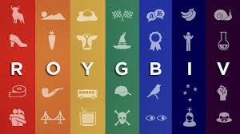

The history of Roy G. Biv and the color wheel go all the way back Sir. Issac Newton. He named the colors he "discovered" during his work on light and color theory and later the acronym which stands for Red Orange Yellow Green Blue Indigo and Violet was born.
If you'd like to learn more about it here is a video that goes into more detail!
The goal of this site is to take a quick look at each color on the color wheel! Have fun!!!!